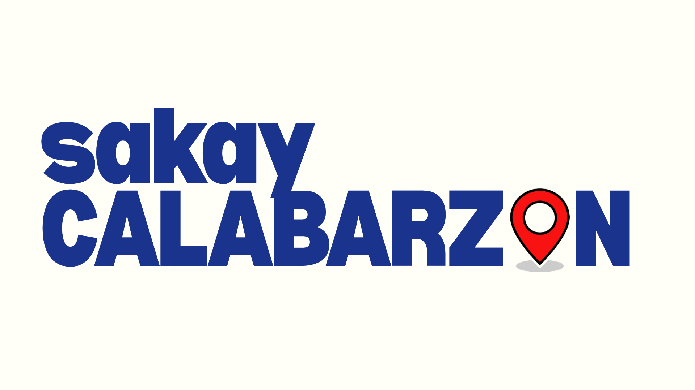
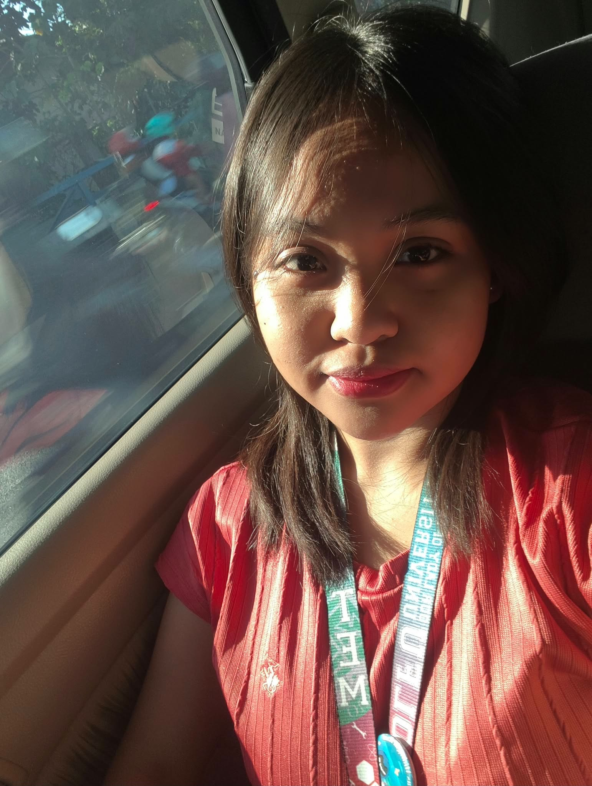

Making everyday travel easier, one route at a time. Discover the right ride, estimated fare, and travel time across CALABARZON.
Discover Our Project ↓Sakay CALABARZON helps commuters in Region 4A find the right ride, the likely fare, and a rough travel time, all in one place.
Whether you're traveling for school, work, or daily errands, our goal is to make public transportation information easier to understand and access.
Know your route. Estimate your fare. Plan your journey.
CALABARZON, also known as Region 4A, is composed of five provinces.
Province of CALABARZON
Province of CALABARZON
Province of CALABARZON
Province of CALABARZON
Province of CALABARZON
Our guide starts with three busy transportation corridors and will continue to grow.
A collaborative project built through research, creativity, and teamwork.
Built the route map and organized the fare and route tables to help commuters navigate transportation options.
Developed the home and routes pages and checked every link to ensure smooth navigation throughout the website.

DESIGN AND DOCUMENTS LEADDesigned the website's visual appearance, handled images and credits, and prepared the project documentation.
Designed and developed the About page, presenting the project's background, team members, and essential information in an organized layout.
Sakay CALABARZON is a final project developed for CC 100 – Introduction to Computing.
Alangilan Campus